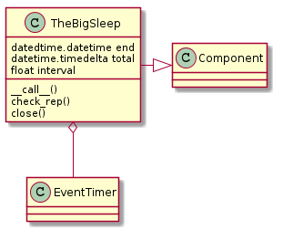
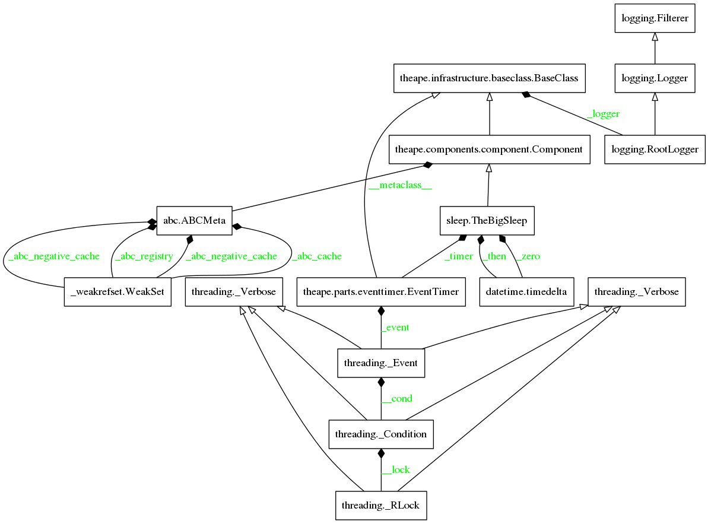

The Big Sleep¶
This is a module to integrate pauses with human-readable feedback into the ape.

The Parameters¶
TheBigSleep takes three parameters – end, total, and interval.
- The interval is the amount of time to sleep between printing status messages to the screen.
- The end is a datetime set to the time (and date) to end
- The total is a timedelta set to amount of time in the future to end
Either the end or the total needs to be set and if you set both the total will be ignored in favor of the end.
end |
total |
Outcome |
|---|---|---|
| None | None | ApeError raised |
| None | timedelta | now() + total used |
| datetime | None | end used |
| datetime | timedelta | end used |
The Class Model¶

TheBigSleep([end, total, interval, verbose]) |
A sleeper |
TheBigSleep.end |
end datetime |
TheBigSleep.total |
Timedelta representing relative time in the future to stop |
TheBigSleep.zero |
A zero timedelta |
TheBigSleep.timer |
An EventTimer for the wait decorator |
TheBigSleep.then |
the stopping-time |
TheBigSleep.emit(*args, **kwargs) |
|
TheBigSleep.check_rep() |
Checks the paramaters |
TheBigSleep.close() |
Closes the timer, sets self.then to 0. |
TheBigSleep.__call__() |
The main interface - blocks until time is up, emitting messages |
Note
This might only have come about because I started using the EventTimer to prevent over-eager access to a server, rather than trying to use it to space intervals, but it didn’t occur to me originally that the times have to be calculated in the method that is wrapped by the wait decorator, because the wait comes before the method call, leaving it 1-second or so behind the time it was called.
Module Diagram¶
A Module Diagram for theape.parts.sleep.sleep.
